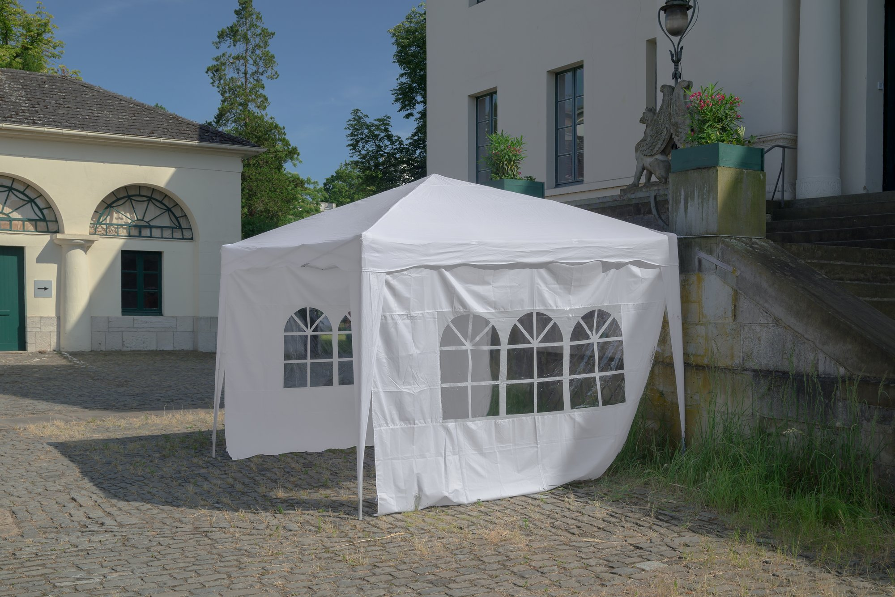
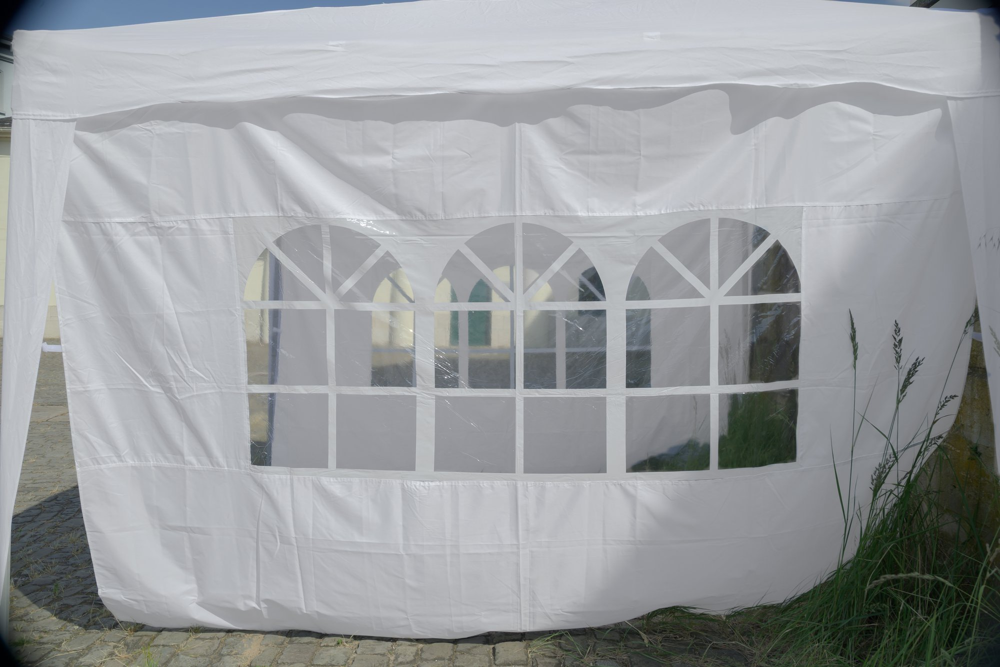
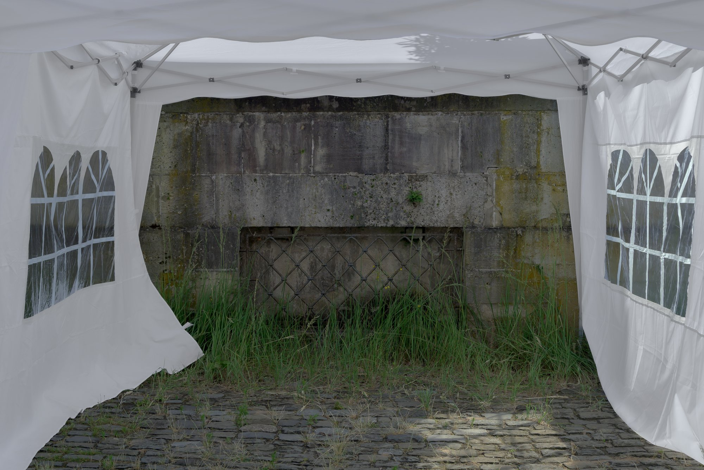
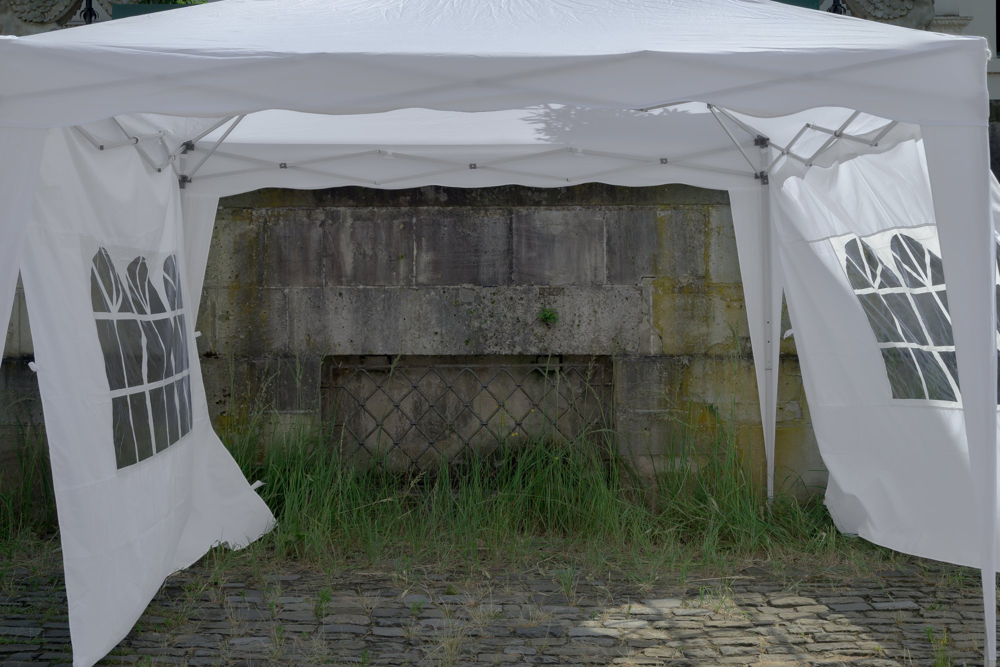
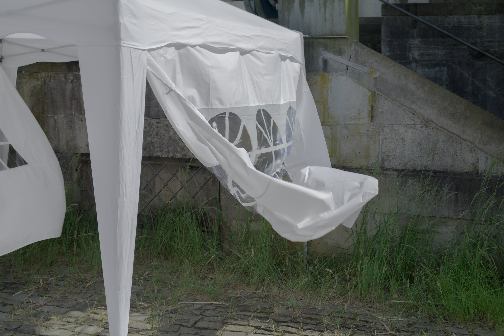
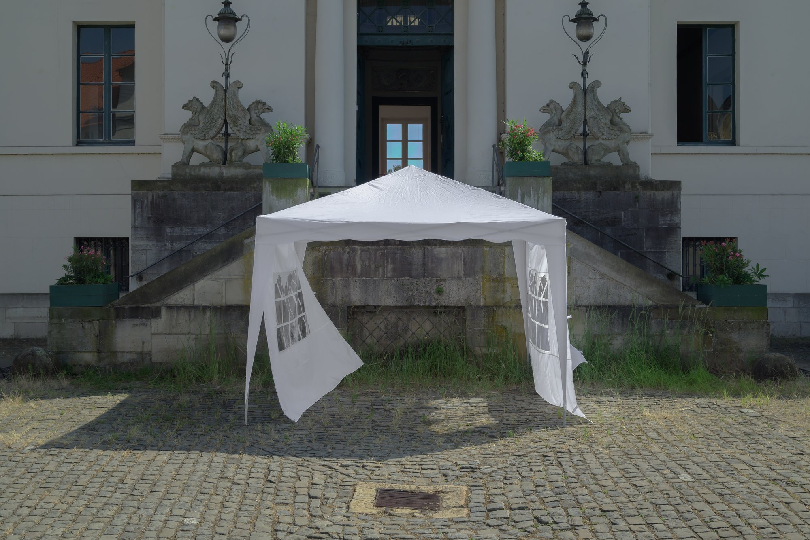

Following the invitation by Faltpavillon, FT presents "Weeds", a floral arrangement in the courtyard. "Weeds" is an instructive architectural program looking into both construction and upkeep of image. In the broadest sense, the term refers to any plant growth in an undesired location, making it a subjective and socialised category. Where the Faltpavillon is placed, the works instruction defines upkeep as the cultivation of naturally occuring growth.
Faltpavillon is an itinerant exhibition vessel created in 2020 by artists Michael Ray-Von and Finn Curry. The format is a 3 × 3 meter folding tent assembled at a new site for each presentation.